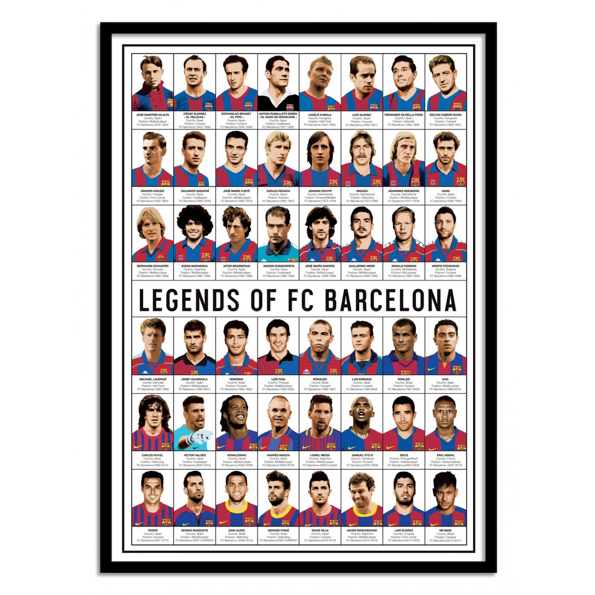

FC Barcelona
Més que un club
Més que un club
Le FC Barcelone a été fondé le 29 novembre 1899 par le Suisse Joan Gamper. Dès ses débuts, le club a incarné une identité catalane forte et un esprit de communauté.
Rapidement, le Barça se distingue par son style offensif et sa passion pour le football.
Dans les années 1920, le club remporte ses premiers titres régionaux et nationaux, s’imposant comme l’un des clubs les plus influents d’Espagne. La création du Camp Nou en 1957 devient un symbole de fierté pour les supporters.
Avec l’arrivée de l’entraîneur Johan Cruyff dans les années 1990, le Barça adopte le célèbre style de jeu basé sur la possession du ballon, le tiki-taka. Des joueurs légendaires comme Rivaldo, Ronaldinho, Xavi et Iniesta marquent cette période.
L’arrivée de Lionel Messi transforme définitivement le club. Avec lui, le Barça remporte de nombreux titres nationaux et internationaux, et devient un symbole mondial du football moderne.
Le FC Barcelone continue de former de jeunes talents à la Masia et de représenter les valeurs catalanes. Le club reste un acteur majeur du football mondial, alliant tradition et innovation.